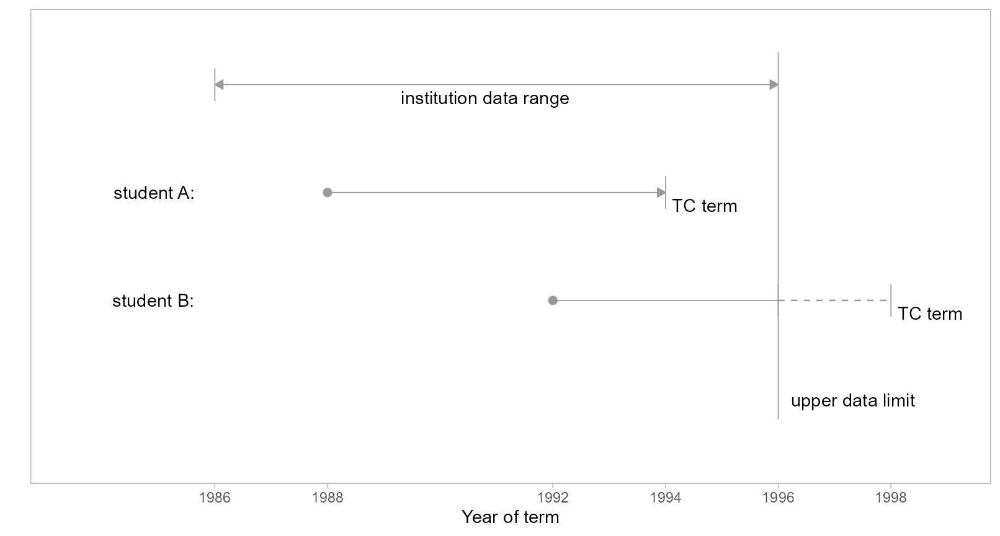
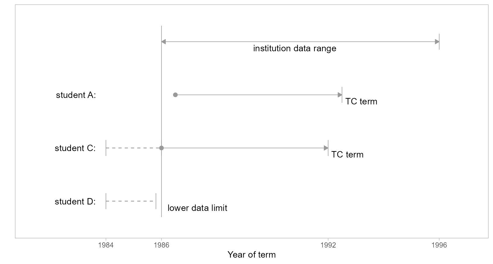

Data sufficiency
Source:vignettes/articles/art-020-data-sufficiency.Rmd
art-020-data-sufficiency.RmdThe requirement that an institution’s data range brackets a student’s entry term and timely completion term for the student to be included in a research population.
Introduction
The data having a sufficient number of terms is the necessary and sufficient condition for positively determining a student’s completion status, which (in turn) is required for a student to be included in a research population.
- Program completion. Satisfying the requirements for a first baccalaureate degree.
- Timely-completion term. The latest term by which we would consider a student’s completion “timely”, default 6 years after admission.
- Completion status. Status levels are “timely” for students graduating no later than their timely-completion term; “late” for graduating afterwards; and “NA” for non-completion. Status levels can be positively determined only for records meeting the data sufficiency criteria.
- Data sufficiency. Identifying students whose: 1) entry term is at least one term later than the lower limit of their institution’s data range; and 2) timely-completion term is no later than the upper limit of the data range.
Rationale
Upper-limit data sufficiency
For students admitted too near the upper limit of their institution’s data range, the available data cover an insufficient number of years to know if completion is timely. To illustrate, in the figure we compare students admitted in different terms with representative time spans shown for timely completion. In this scenario, we assume institution data is available from 1986 to 1996.

Figure 1: Upper limit data sufficiency.
- Student A
-
Student A enters in Fall 1988 with a timely completion (TC) term of Spring 1994. In both of the following cases, the data sufficiency criteria are satisfied and the students are included in the research population.
A-1: First time in college (FTIC), so we know their first term is their entry term (i.e., they are not a continuing student) and we can determine their TC term.
A-2: Transfer student, and we know their first term in a MIDFIELD institution. We have no knowledge of how much time was spent accumulating their pre-MIDFIELD credit hours, but we can estimate a TC term with respect to their “level” at entry, that is, entering as a first-year student, second-year student, etc.
- Student B
-
Student B enters in Fall 1993 with a TC term of Spring 1998, two years beyond the range of the data. We have several possible cases,
B-1: On or before the data limit, the student completes their program (documented timely completion)
B-2: Before the data limit, the student leaves the data base (documented non-completion)
B-3: After the data limit, the student completes before their TC term (undocumented timely completion)
B-4: After the data limit, the student completes after their TC term or fails to complete (undocumented late completion or non-completion)
Because the outcomes in cases B-3 and B-4 are not in the record, to include case B-1 and B-2 invariably produces a miscount of timely completers, late completers, and non-completers. Thus all student B records are excluded from a research population.
Lower-limit data sufficiency
To determine data sufficiency at the lower limit of the data range, we compare a student’s first term (non-summer) to the first term of the data range (also non-summer). When these two terms are identical, the student is excluded from the research population. We illustrate with the three scenarios described below.

Figure 2: Lower limit data sufficiency.
- Student A
-
Like Student A in Figure 1, they enter the dataset in a term following the data lower limit and are included in the research population.
- Student C
-
Student C enters the institution before the lower limit of the data range (a “continuing” student) or they enter the institution at the lower limit precisely.
C-1: If student C is continuing, regardless of status (FTIC or transfer), making an estimate of their TC term invariably leads to false counts because we have no knowledge of how much time was spent accumulating credit hours at their MIDFIELD institution before the lower data limit. Including C-1 would also produce false counts because of student D (discussed below).
C-2: If student C is not continuing, that is, their first time entry to a MIDFIELD institution is at the lower data limit (here, 1986), we would include them in a study if we could. Unfortunately, we cannot distinguish them from continuing students. Having to exclude C-1 inherently excludes C-2 as well.
- Student D
-
Student D enters the institution at the same time as continuing student C but leaves the database before the data lower limit term.
D-1: Student D did not timely-complete their program. In this case, if we include student C our count of non-completers is low (D-1 cases are missing), resulting in an inflated ratio of completers to non-completers.
D-2: Student D did timely-complete their program. Here, if we include student C our count of completers is low (D-2 cases are missing), resulting in a diminished ratio of completers to non-completers.
The balance of these two effects is unknowable. Since student D cannot possibly be included, Student C must also be excluded.
Application
We examine the records of specific students in the practice data and interpret the results. Relevant functions:
-
timely_term()Determines the latest term by which program completion would be considered timely. -
data_sufficiency()Identifies records to exclude due to insufficient data.
# packages
library("midfieldr")
library("midfielddata")
library("data.table")
# setup
data(student, term)
DT <- student[, .(mcid)]
timely_term()
Usage:
timely_term(dframe, # requires mcid
midf_table = term, # requires mcid, term, level
span, # default 6
sched_span
) # default 4In the examples, we use the default span of 6 years based on 150% of the default scheduled span of 4 years.
DT <- timely_term(DT, term)
DT[order(-adj_span)]
#> mcid entry_term entry_level adj_span timely_term
#> <char> <char> <char> <num> <char>
#> 1: MCID3111142225 19881 01 First-year 6 19933
#> 2: MCID3111142283 19881 01 First-year 6 19933
#> 3: MCID3111142290 19881 01 First-year 6 19933
#> ---
#> 97553: MCID3111858641 20013 03 Third-year 4 20051
#> 97554: MCID3111860641 20013 03 Third-year 4 20051
#> 97555: MCID3111602161 19991 04 Fourth-year 3 20013Example 1.
DT[mcid == "MCID3111142225"]
#> mcid entry_term entry_level adj_span timely_term
#> <char> <char> <char> <num> <char>
#> 1: MCID3111142225 19881 01 First-year 6 19933Input values: The student’s entry term is Fall 1988 (encoded
19881) and their entry level is
01 First-year.
Output values: Adjusted span is the default 6 years.
Counting Fall 88 through Spring 89 as the first year, the five
subsequent years end in Spring 1990, 91, 92, 93, 94, yielding a timely
completion term of Spring 1994 (encoded 19933).
Example 2.
DT[mcid == "MCID3111860641"]
#> mcid entry_term entry_level adj_span timely_term
#> <char> <char> <char> <num> <char>
#> 1: MCID3111860641 20013 03 Third-year 4 20051Input values: The student’s entry term is Spring 2002
(encoded 20013) and their entry level is
03 Third-year from which we infer they have completed two
years of their program.
Output values: Adjusted span is 4 years. Counting Spring 02
through Fall 02 as the first year, the three subsequent years end in
Fall 2003, 04, and 05, yielding a timely completion term of Fall 2005
(encoded 20051).
data_sufficiency()
Usage:
data_sufficiency(dframe, # requires mcid, entry_term, timely_term
midf_table = term
) # requires mcid, term, institutionWe select the required columns in the input to reduce clutter in the output.
# setup
DT <- DT[, .(mcid, entry_term, timely_term)]
# apply
DT <- data_sufficiency(DT, term)
DT[order(sufficiency)]
#> mcid entry_term timely_term data_range sufficiency
#> <char> <char> <char> <char> <char>
#> 1: MCID3111142225 19881 19933 19881-20181 fail-lower
#> 2: MCID3111142283 19881 19933 19881-20096 fail-lower
#> 3: MCID3111142290 19881 19933 19881-20096 fail-lower
#> ---
#> 97553: MCID3112785480 20071 20123 19901-20154 satisfied
#> 97554: MCID3112800920 20101 20153 19881-20181 satisfied
#> 97555: MCID3112870009 19951 20003 19881-20181 satisfiedExample 3. Exemplifies “Student A” in Figure 1 or Figure 2.
DT[mcid == "MCID3112785480"]
#> mcid entry_term timely_term data_range sufficiency
#> <char> <char> <char> <char> <char>
#> 1: MCID3112785480 20071 20123 19901-20154 satisfiedInput values: Entry term of Fall 2007; timely completion term of Spring 2013; institution data range of Fall 1990 through Summer 2015.
Output values: Data sufficiency is satisfied. Data range lower limit is before the entry term; upper limit is after the timely completion term.
Example 4. Exemplifies “Student B” in Figure 1.
DT[mcid == "MCID3111170322"]
#> mcid entry_term timely_term data_range sufficiency
#> <char> <char> <char> <char> <char>
#> 1: MCID3111170322 20133 20191 19881-20181 fail-upperInput values: Entry term of Spring 2013; timely completion term of Fall 2019; institution data range of Fall 1988 through Fall 2018.
Output values: Data sufficiency fails at the upper limit of the data range. Timely completion term is after the upper limit.
Example 5. Exemplifies “Student C” in Figure 2.
DT[mcid == "MCID3112056754"]
#> mcid entry_term timely_term data_range sufficiency
#> <char> <char> <char> <char> <char>
#> 1: MCID3112056754 19881 19933 19881-20096 fail-lowerInput values: Entry term of Fall 1988; timely completion term of Spring 1993; institution data range of Fall 1988 through Summer 2009
Output values: Data sufficiency fails at the lower limit of the data range. Entry term and lower limit are identical.